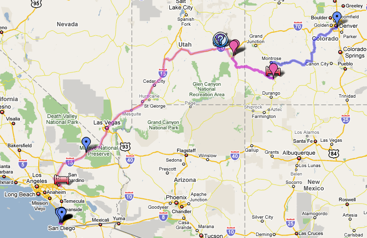

Neogeography

Over the summer I've been keeping a geographic journal of some of our recent adventures:
-
- The Minnesota project
- our summer in Blooming Prairie
-
- CO to CA
- our summer roadtrip
It's an amusing journalling project for me, but as an exercise in neogeography (the distainful term Geographic Information System pros use to describe such upstart tools, popular with the great unwashed) I have to say it's pretty forlorn. The editing tool is thoroughly annoying to use, and the data model is none existant - you're simply crayoning one-off symbols on top of the map, with no ability to relate any symbol to any other, except by manually assigning them the same symbology. The ability to import KMZ is little consolation if all the resultant data is so unstructured. No doubt things will get better as GIS and neogeography borrow each other's best ideas, but for the time being this exercise left me disappointed.
I seem to recall that the editing tools in Google Earth are a smidgeon better, but still profoundly lacking. Anyone got any ideas what I should be using instead for personal 'for amusement' projects like this?